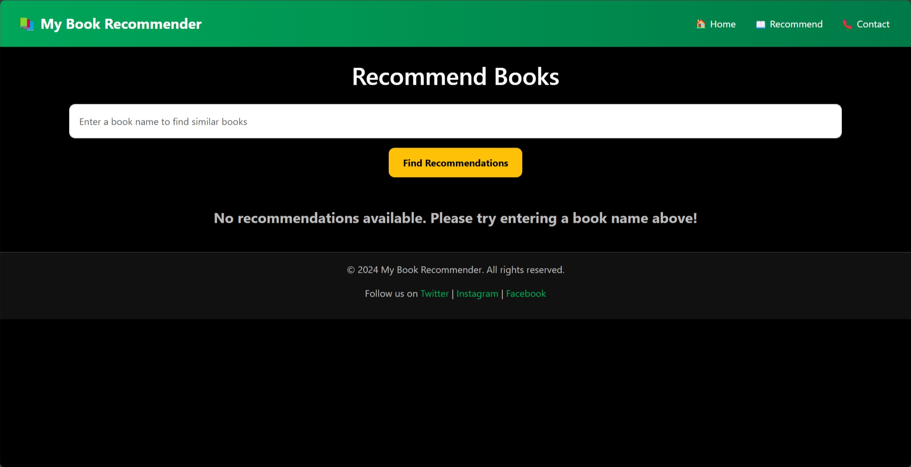
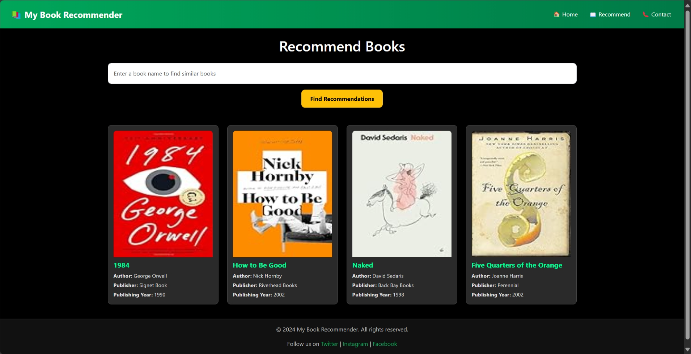

Book Recommendation System



Project Description
The Book Recommendation System is a Flask-based web application that leverages collaborative filtering to provide personalized book recommendations, featuring book titles, authors, publishers, year of publication, and cover images.
Features
- Personalized book recommendations based on user input
- Homepage displays top 50 books by popularity
- Interactive web interface built with Flask, HTML, CSS, and Bootstrap
- Precomputed similarity scores for fast recommendations
Technical Stack
- Backend: Flask (Python)
- Frontend: HTML, CSS, Bootstrap
- Data: Pandas, NumPy, collaborative filtering
- Serialization: Pickle (books, similarity scores, pivot table)
Setup
git clone https://github.com/iamtgiri/Book_Recommendation_System.git
cd Book_Recommendation_System
pip install -r requirements.txt
python app.pyApp runs at http://127.0.0.1:5000/